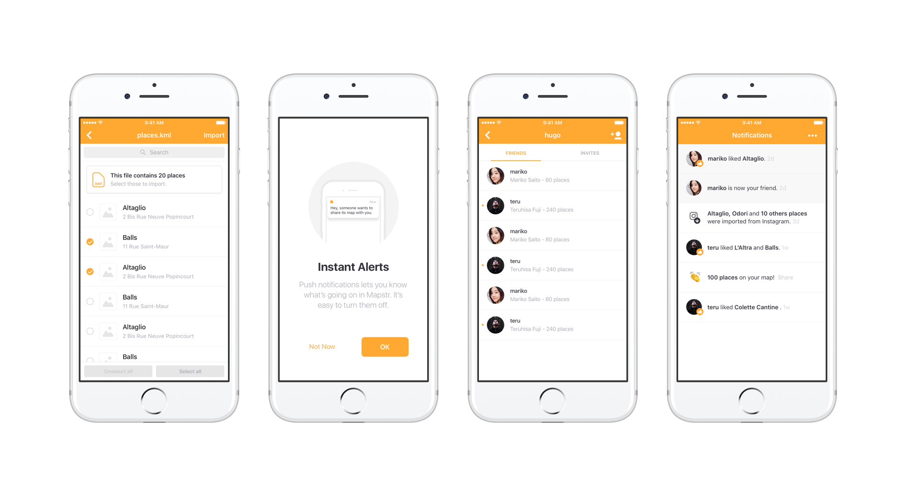

Design a system
Mapstr’s old logotype and app icon had gone practically unchanged since the company’s creation and it was more than time for a refresh. The weird color, the hash icon plus the lack of typographic effort — using a default system font — clearly made the brand system feel outdated.
Icon

Component kit
Building a platform
Mapstr’s goal is to build the default platform to create, collect, and share places everywhere around the world. The first problem we met was how to build trust from our users, how to inform them that the platform is secure and private by design? Each steps of the process required a deep focus on giving users the best way to access, control and manage their data — dealing with rather personal inputs, to create a trustworthy platform.
Component kit
Connected to your apps
As a platform, we needed to communicate
with apps and external data providers.
I designed and shipped a module that let users import
places from different APIs — parsing retrieved geopoints,
and converting them into places with valid content
informations. Local source files such as .csv or .klm
were also supported.
To build up the platform experience, users could also
browse recent deleted data through a backup storage
settings page.
Designed for the inner circle
When we introduced the User Accounts feature,
we knew that we reached a milestone step.
Enabling our users to interact within the app had
a huge impact on acquisition — which at that moment,
was the bottom line lever to our company’s business growth.
Based on research outcomes, we first defined a user model
architecture, then I was in charge of the complete UX workflow,
from the sign-up journey to the design, test phases and
implementation of every user related features.
It was very challenging to deal with projects involving
designing for user privacy along with inputing growth
processes — creating a platform at the in-between
of a commodity tool and an private social network.
We received a lot a great feedbacks
Thanks for having introduce user IDs, it’s way
more easier to add friends. The app is essential to keep
track of your places and your friends ones.
Finally!!!
Awesome app ! Definitely better when your friends
are using it and share their favorite spots with you 👌